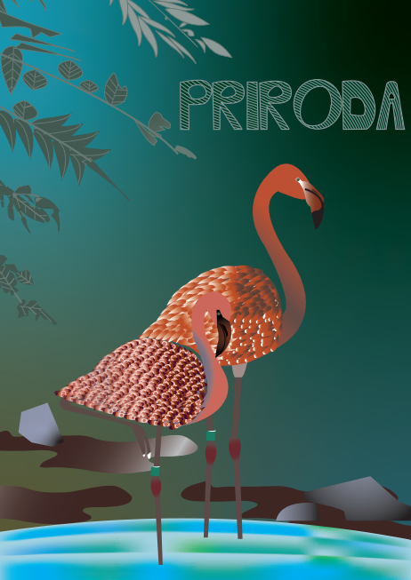
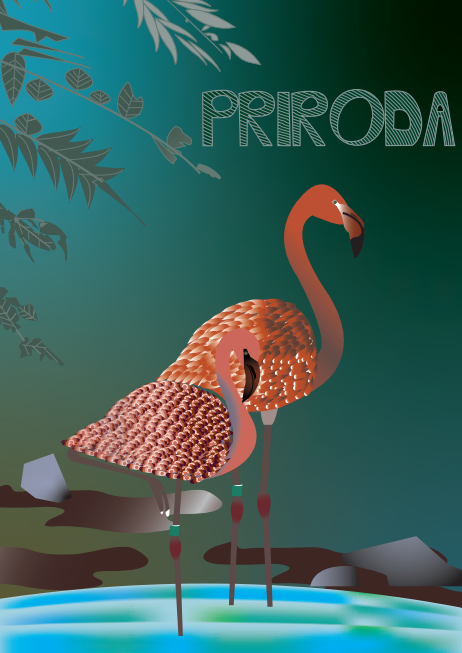
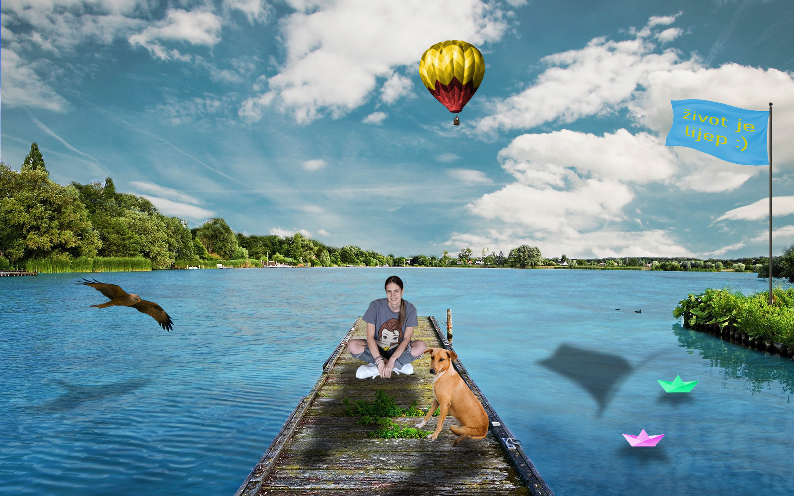
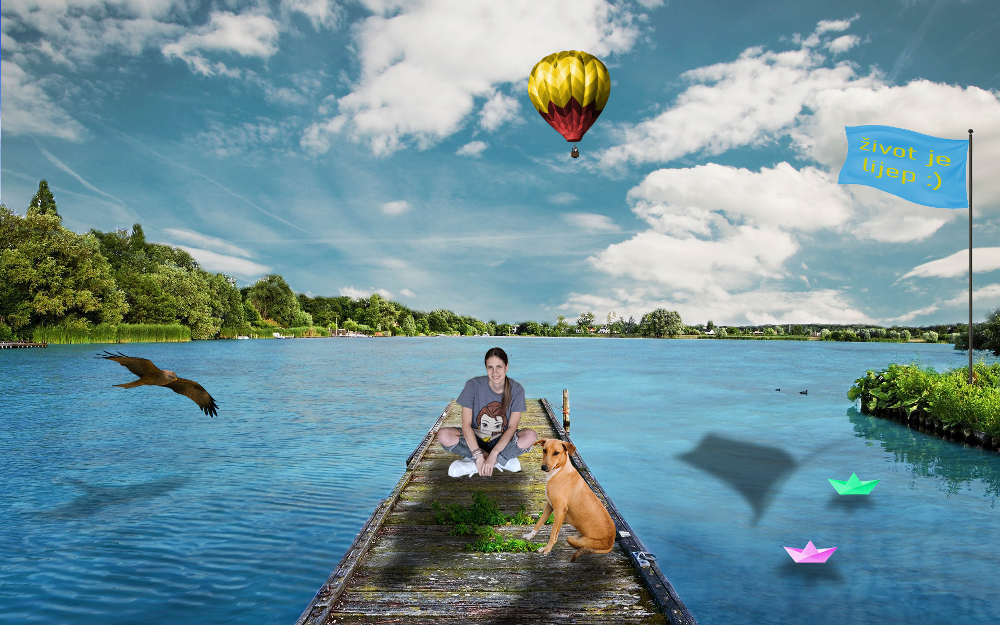

Vježba 1 - FontForge
Ovdje je se nalazi prva vježba koja prikazuje samostalno izrađen font.
Vježba 2 - Ilustrator
.jpg) 

Sljedeće fotografije prikazuju vježbe i projektni zadatak izrađene u Adobe Illustratoru. Ilustartor se koristi za stvaranje logotipa, ilustarcija, crteža i dr. grf. dizajnova.
U vježbama su korišteni alati:
- Pen Tool
- Fill
- Stroke
- Gradijent i ostali
Vježba 3 - Adobe Photoshop
.jpg)
.jpg)
.jpg) 

Nadalje slijede vježbe i projektni zadatak izrađeni u Adobe Photoshopu.
Photoshop pruža alate za retuširanje, manipulaciju slikama, rad sa slojevima i dodavanje specijalnih efekata.
Vježba 4 - Adobe Premiere Pro
Ovdje se nalaze vježbe napravljene u programu Premiere Pro.
U osmoj vježbi sam izradila dva kinemagrafa u .gif formatu.
U devetoj vježbi sam izradila dva videa.
Adobe Premiere Pro je softver za video montažu, korišćen za uređivanje video sadržaja, dodavanje efekata i prilagođavanje zvuka.
Vježba 5: Visual Studio Code
U zadnjoj vježbi sam izradila web stranicu pomoću alata Visual Studio Code.
Visual Studio Code je alat za izradu web stranica, koji omogućava vizualno dizajniranje i uređivanje koda.
U nastavku slijedi link na moju web stranicu.
Pogledaj moju stranicu